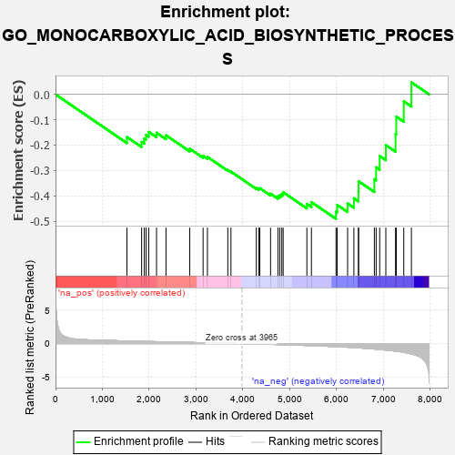
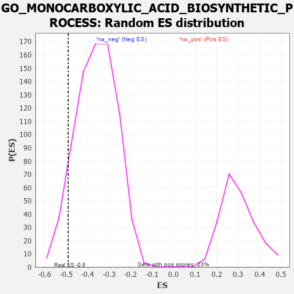

| | | Dataset | 7d |
| Phenotype | NoPhenotypeAvailable |
| Upregulated in class | na_neg |
| GeneSet | GO_MONOCARBOXYLIC_ACID_BIOSYNTHETIC_PROCESS |
| Enrichment Score (ES) | -0.49075675 |
| Normalized Enrichment Score (NES) | -1.3640571 |
| Nominal p-value | 0.08538163 |
| FDR q-value | 0.38844693 |
| FWER p-Value | 1.0 |
Table: GSEA Results Summary

Fig 1: Enrichment plot: GO_MONOCARBOXYLIC_ACID_BIOSYNTHETIC_PROCESS
Profile of the Running ES Score & Positions of GeneSet Members on the Rank Ordered List
| PROBE | GENE SYMBOL | GENE_TITLE | RANK IN GENE LIST | RANK METRIC SCORE | RUNNING ES | CORE ENRICHMENT | | 1 | LIAS | | | 1524 | 0.387 | -0.1682 | No |
| 2 | MECR | | | 1838 | 0.330 | -0.1873 | No |
| 3 | OXSM | | | 1894 | 0.321 | -0.1745 | No |
| 4 | HACD3 | | | 1932 | 0.315 | -0.1597 | No |
| 5 | GPX4 | | | 1989 | 0.306 | -0.1479 | No |
| 6 | TECR | | | 2156 | 0.284 | -0.1514 | No |
| 7 | MIF | | | 2357 | 0.252 | -0.1611 | No |
| 8 | WDTC1 | | | 2865 | 0.172 | -0.2144 | No |
| 9 | ACLY | | | 3149 | 0.130 | -0.2420 | No |
| 10 | FADS1 | | | 3242 | 0.114 | -0.2466 | No |
| 11 | ABCD1 | | | 3677 | 0.047 | -0.2984 | No |
| 12 | HACD2 | | | 3744 | 0.035 | -0.3046 | No |
| 13 | MCAT | | | 4285 | -0.058 | -0.3691 | No |
| 14 | AMACR | | | 4338 | -0.066 | -0.3715 | No |
| 15 | ACADL | | | 4360 | -0.069 | -0.3699 | No |
| 16 | CBR1 | | | 4589 | -0.116 | -0.3915 | No |
| 17 | DEGS1 | | | 4747 | -0.148 | -0.4022 | No |
| 18 | MYO5A | | | 4787 | -0.155 | -0.3975 | No |
| 19 | ABCD3 | | | 4829 | -0.164 | -0.3926 | No |
| 20 | GATM | | | 4858 | -0.168 | -0.3858 | No |
| 21 | ACOT8 | | | 5364 | -0.288 | -0.4317 | No |
| 22 | ACOX2 | | | 5461 | -0.310 | -0.4247 | No |
| 23 | SCAP | | | 5986 | -0.466 | -0.4621 | Yes |
| 24 | XBP1 | | | 6011 | -0.475 | -0.4359 | Yes |
| 25 | RGN | | | 6233 | -0.547 | -0.4300 | Yes |
| 26 | ACMSD | | | 6367 | -0.603 | -0.4097 | Yes |
| 27 | SRR | | | 6464 | -0.646 | -0.3820 | Yes |
| 28 | LIPG | | | 6468 | -0.648 | -0.3425 | Yes |
| 29 | ABHD3 | | | 6804 | -0.816 | -0.3345 | Yes |
| 30 | MGLL | | | 6842 | -0.838 | -0.2876 | Yes |
| 31 | CSPG4 | | | 6918 | -0.878 | -0.2430 | Yes |
| 32 | PIBF1 | | | 7049 | -0.966 | -0.2000 | Yes |
| 33 | GSTM1 | | | 7256 | -1.129 | -0.1564 | Yes |
| 34 | QKI | | | 7272 | -1.145 | -0.0878 | Yes |
| 35 | KMO | | | 7432 | -1.308 | -0.0274 | Yes |
| 36 | ASNS | | | 7595 | -1.547 | 0.0474 | Yes |
Table: GSEA details [plain text format]

Fig 2: GO_MONOCARBOXYLIC_ACID_BIOSYNTHETIC_PROCESS: Random ES distribution
Gene set null distribution of ES for GO_MONOCARBOXYLIC_ACID_BIOSYNTHETIC_PROCESS